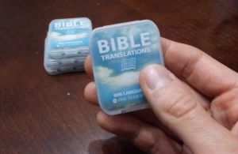

What are BibleSD cards?

- 1,300 free Bible translations in 900 languages.
- Translations can be viewed in HTML, eBook, or plain-text formats.
- These are strictly redistributable translations, provided by eBible.org.
- OpenBible content: interlinear Bible study tools (original Hebrew and Greek) and English commentaries and dictionaries.
- A few extras: Salvation verses in 8 languages, special Rapture message, Heb/Gr word search, and single-page bible